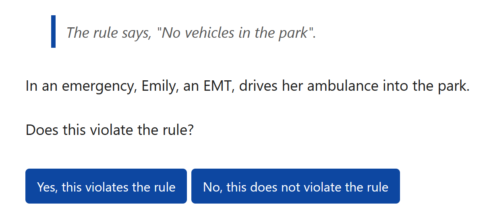
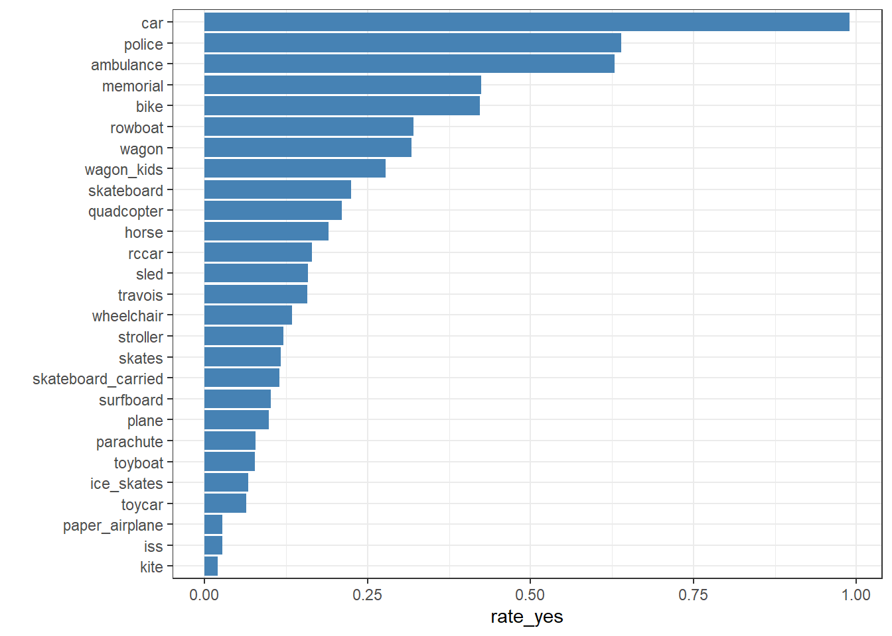
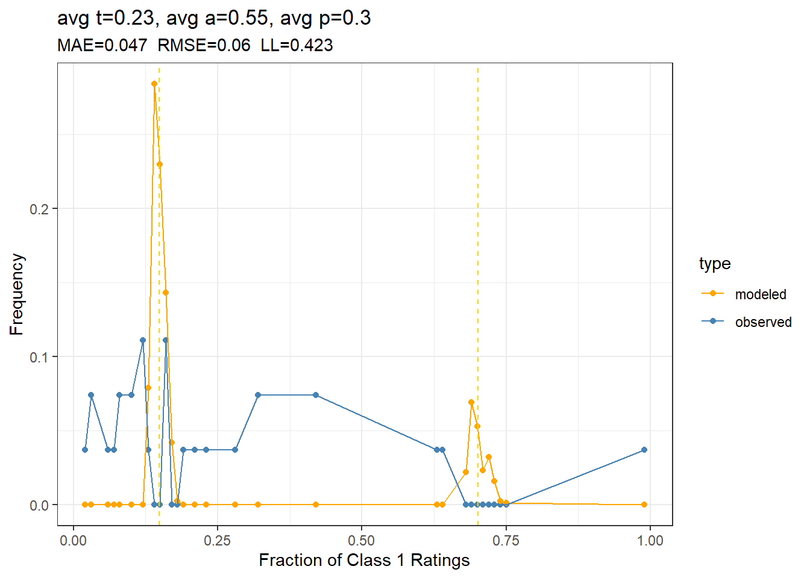
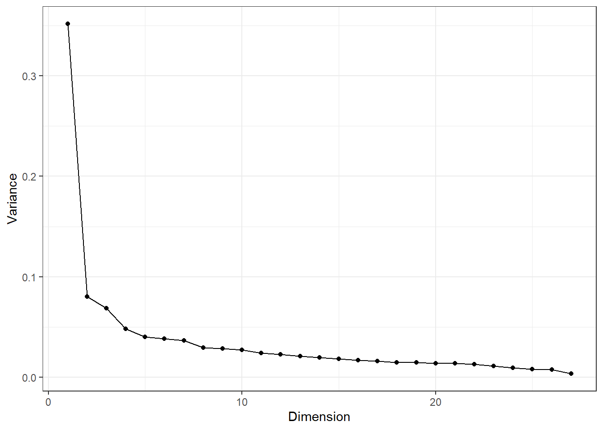

library(tidyverse)library(tapModel)library(LaplacesDemon) # for mode and rbernlibrary(knitr)library(ggExtra)library(lme4)library(widyr)data("park_survey_data")survey <- park_survey_dataquestions <- survey$questionsratings <- survey$ratings
1 No Vehicles in the Park
A web survey by Dave Turner has 27 questions that ask about behavior in a park.
Every question is about a hypothetical park. The park has a rule: “No vehicles in the park.” Your job is to determine if this rule has been violated.
If you haven’t done the survey, you might want to try it; it doesn’t take long. Minor spoilers ahead. As an example, the first question is

The questions are binary, so in the context of rater agreement, we might wonder if there’s evidence for a latent true answer, which might be revealed by modeling with t-a-p parameters. The author has shared the data, a snapshot of which is included in the tapModel package, comprising 51953 rows of data, each with a subject_id (the question number), a binary rating (1 = rule violation), a rater identifier, and the gender of the randomly-assigned name generated when the question was presented. For example, in the screenshot above, “Emily” might be “Bob” if you take the survey. The gender assignment is secondary to my interests here.
Others have written about the survey. I learned about it on Andrew Gelman’s blog, where he cites Dan Luu’s article, which links the survey to content moderation, where it’s difficult to get moderators to agree about rules. Dan references a Hacker News discussion about the survey.
In the data snapshot I got, there are 51953 binary ratings over the 27 questions (subjects), with 2409 unique survey respondents (raters).
As a first look, we can assess the degree of agreement with the fraction of ‘yes’ responses for each item.
Show the code
ratings |>group_by(subject_id) |>summarize(rate_yes =mean(rating)) |>left_join(questions, by =join_by(subject_id)) |>ggplot(aes(x = rate_yes, y =reorder(item_id, rate_yes))) +geom_col(fill ="steelblue") +theme_bw() +ylab("")

Figure 1: Fraction citing rules violation for each type of vehicle.
The full prompts are too long to include in Figure 1, but you can get the idea from the short ids. A car driving in the park is a clear violation of the rule. A kite flying overhead is not.
1.1 The Simple t-a-p Model
In the simplest t-a-p model, raters are identical, and subjects are either true Class 1 (rule violation) or not, according to a latent variable.
The parameters in Table 1 suggest a high rater accuracy, which seems unlikely. The modeled \(t\) indicates a low rate of true rules violation, and somewhat biased ratings (\(a\) different from \(p\)). Rating entropy is fairly high at 0.66 bits per rating. A calibration plot will allow us to visually assess the match between the empirical frequencies of yes-votes and what the model would predict, using subjects (i.e. survey questions) as the basis for the calculation. This is the most useful calibration plot, because rater agreement is about the comparison between within-subject and between-subject agreement.
Figure 2: Basic t-a-p model calibration plot, showing the frequency of yes votes per subject for the model and the empirical data. In the title are mean absolute error, root-mean-squared error, and bits per rating.
The model obviously doesn’t fit the data here. With so many raters, a reasonable level of accuracy would result in the clearly-defined mixture distribution (the modeled line in Figure 2). The observed data looks nothing like that. At first look, the JTB’s latent truth assumption is not supported by the data.
1.2 The Hierarchical t-a-p Model
But maybe the three-parameter model is just too crude. We can use the robust MCMC method to estimate individual rater and subject parameters for the Park data set, to see if the calibration improves.
Show the code
# this is slowgenerate <-FALSEif(generate){ mcmc_params <- tapModel::fit_ratings_mcmc(ratings)write_rds(mcmc_params, "data/park_mcmc_params.rds")} else { mcmc_params <-read_rds("data/park_mcmc_params.rds")}rating_params <- mcmc_params$rating_paramsrating_params |>subject_calibration()

Figure 3: Hierarchical t-a-p model calibration plot, showing the frequency of yes votes per survey question for the model and the rates in the empirical data.
The calibration plot in Figure 3 doesn’t show improvement, although the likelihood is better. The calibration plot shows that the JTB model is qualitatively wrong for this data.
There’s an idea in the rater agreement literature that we can “weed out spammers” by using the model results to identify bad raters, filter them out, and try again. I tried that, but it didn’t significantly improve the calibration, in that the binomial mixture is still there in the model, but not the filtered data.
1.3 Independence
One reason for the poor fit might be a violation of the independence assumption. We can get a sense of that by looking at the covariances among rater pairs.
Figure 4: Predicted versus actual correlations among 200 randomly-chosen raters, showing a histogram of the difference Actual - Predicted.
There seem to be a lot of anomolous values on the high side. This may indicate a violation of the independence assumption for some subset of raters. Since these results just represent a sample of 200 randomly-chosen raters, we’ll get somewhat different results each time we run it.
1.4 Estimated Truth Parameters
Even with a poorly-fitting model, it may be interesting to use the \(t_i\) estimates from the MCMC model to plot the estimated truth values for each item in comparison with the raw response rates.
Show the code
t_estimates <- mcmc_params$rating_params |>distinct(subject_id, t)ratings |>group_by(subject_id) |>summarize(rate_yes =mean(rating)) |>left_join(t_estimates, by ="subject_id") |>left_join(questions, by =join_by(subject_id)) |>ggplot(aes(x = rate_yes, y =reorder(item_id, rate_yes))) +geom_col(fill ="steelblue") +geom_point(aes(x = t, y = item_id), color ="red", size =2) +theme_bw() +ylab("")
Figure 5: Estimated truth values for each item as red markers, compared with the raw “yes” response rates in blue.
The truth estimates in Figure 5 are essentially dichotomous, identifying the most obvious “no vehicles” violations: a car driving in the park, a police car, and an ambulance. The MCMC model, which accounts for rater accuracy, also flags the “memorial” case, in which a decommissioned army tank is towed into the park to create a memorial. The model estimates that the tank is a rule violation, but the empirical data is equivocal, ranking this case the same as a bike rider in the park.
I suppose one could use these values for adjudication of content, but it’s crude, because we know the model doesn’t really fit the data. It would be a hack to get to a yes/no result.
1.5 Preference Models
In his blog post, Gelman’s approach is to use a hierarchical model that resembles Item Response Theory (IRT) or Rasch models. This is a common way to assess test scores and rater responses, especially if there’s a known set of correct answers. See for example Engelhard Jr & Wind (2017). If there’s a correct answer, as with a standardized test, then we can model the probability of a correct answer as a function of the latent ability of the test taker and the difficulty of the question. These two parameters are assumed to be on the same latent scale, sometimes called an “invariant” scale. When there’s no correct answer, as with the Park survey, we can still use a similar model to estimate the parameters, but they have a simpler meaning. Rather than assessing the “truth” of statements, we’re just assessing rater preferences, estimating the probability of a “yes” response. As usual, this happens on a log-odds scale, like
\[
\log\left(\frac{Pr[C_{ij} = 1]}{Pr[C_{ij}=0]}\right) = \beta + t_i + p_j.
\] Here, The \(C_{ij}\) are the ratings (1 = “yes”), \(\beta\) is a constant, \(t_i\) is the overall preference (not truth) for rating item \(i\) as “yes”, and \(p_j\) is the preference of rater \(j\) to rate all items “yes.” Usually we assume that these latent preferences are normally distributed with zero mean (hence the \(\beta\)). In circumstances where the true answers are known, we’d substitute the condition of a correct answer (\(C_{ij} = T_i\)) rather than the response itself.
The latent preference model builds in calibration. In fact, the model essentially is just calibration, matching item and rater preferences to the empirical ratings. So as a measure of model fit, calibration, isn’t very interesting. This is unlike the t-a-p model, which has strong assumptions about truth and rater accuracy.
1.6 Dimensionality
We can think of a preference model as one end of a spectrum, with the JTB t-a-p model on the other end. Justified True Belief requires binary truth, so that each question has an assumed latent yes or no correct answer. The preference model can be thought of as individualized truth, where there are no wrong answers, only inclinations to vote one way or the other. This suggests testing the survey data for its dimensionality. Maybe there’s a middle ground with “true” classifications that can take on \(k\) values instead of just two. What if earnest raters have legitimately different ways of assessing the question. In that case, each rater has an additional latent variable \(k\) that assigns the type of truth they are assessing. The effect would be \(k\) ways to sort the questions into yes/no categories. Looking at correlations between items can help flesh out this idea.
Table 2: Largest correlations between item responses
Var1
Var2
Cor
police
ambulance
0.90
wheelchair
stroller
0.76
skates
ice_skates
0.72
stroller
skateboard_carried
0.69
surfboard
ice_skates
0.65
skateboard_carried
skateboard
0.65
wheelchair
skateboard_carried
0.64
wagon_kids
wagon
0.64
sled
skateboard
0.63
surfboard
skates
0.62
There’s a certain logic evident here, for example the similarity between a police car and an ambulance in the park. We can crudely assess which items are most dissimilar to the others using the average correlation.
Table 3: Items with the smallest average correlations to other items.
Var1
avg_cor
car
0.03
horse
0.12
iss
0.15
memorial
0.16
quadcopter
0.19
plane
0.19
bike
0.20
ice_skates
0.20
police
0.20
kite
0.23
The car is probably an outlier because it’s the clearest violation of the rule. The other cases are all weird in some way. Is a horse a vehicle? That could be an example of one of the hypothetical \(k\)-categories of question. If a horse is a vehicle, then it’s perhaps a violation, but if not, then the policy doesn’t apply. The ISS question asks if the International Space Station flying overhead violates the policy. Here a hypothetical \(k\)-category is “is the ISS in the park?”
The dimensionality of the survey can be assessed using a clustering method. The most mathematically rigorous is probably a singular value decomposition (SVD), which is also called Principal Components Analysis (PCA). Applying the decomposition to the correlation matrix gives an orthogonal basis matrix and a scaling matrix. From that we can find the linear dimensionality, measured as a fraction of variance.
Show the code
survey_dims |>as.data.frame() |>mutate(dimension =row_number()) |>ggplot(aes(x = dimension, y = survey_dims)) +geom_line() +geom_point() +labs(x ="Dimension", y ="Variance") +theme_bw()

Figure 6: Plot of the variance captured by each of the singular vectors in the SVD of the item correlation matrix
The pattern in Figure 6 is typical of this sort of data: there’s a single dimension that dominates the rest. In this case, the first singluar vector “explains” about 35 percent of the variance in item responses. Let’s look at it.
Table 4: The first (principal) vector component of the SVD decomposition, showing item loadings to produce the linear combination comprising the vector.
V1
ambulance
0.11
bike
0.19
car
0.00
horse
0.15
ice_skates
0.24
iss
0.16
kite
0.17
memorial
0.12
paper_airplane
0.20
parachute
0.20
plane
0.11
police
0.10
quadcopter
0.14
rccar
0.17
rowboat
0.20
skateboard
0.24
skateboard_carried
0.25
skates
0.24
sled
0.24
stroller
0.26
surfboard
0.24
toyboat
0.19
toycar
0.20
travois
0.19
wagon
0.18
wagon_kids
0.22
wheelchair
0.25
It’s common for a survey of similarly phrased questions with a common (e.g. Likert-type) scale to be dominated by a singular vector that’s essentially an average of the responses. This might be understood as overall affect of the respondent. In the case of the park survey, we have a weighted average (all the coefficients have the same sign), with a single item left out: the car in the park. We already noticed that this cquestion is the least correlated with the others, and this zero coefficient is a consequence.
2 Testing the Multi-Truth Idea
The idea sketched earlier described a continuum between the t-a-p model’s single absolute latent truth value for each item and the IRT-style preference that essentially allows each rater to have his or her own truth. The simplest step between would be to allow raters to fall into one of two epistemologies, so each subject (survey question) would have two truth values, corresponding to these epistemologies. I tried this out with a fully marginialized E-M algorithm in the code block below, but it doesn’t work, and I think the problem may not be well-defined.
The first step of the E-M algorithm is interesting in that it initially assigns \(T_1\) to be all ones and \(T_2\) to be all zeros. This then defaults to the single-epistemology case, with the mixture parameter (\(e\)) plays the role of \(t\) in the basic t-a-p model. It’s quite possible that the E-M algorithm isn’t correctly specified, or it may be that this idea isn’t computationally feasible. I’ve included the code in case someone out there is interested enough to dig deeper into this idea.
Show the code
#################### functions ###################simulate_ratings <-function(N_s =1000, N_r =20, t1 =0.2, t2 =0.8, a =0.5, p =0.5, e =0.5, seed =NULL) {if (!is.null(seed)) set.seed(seed)# Subject truth (theta) values: assume uniform for now T1_i <-as.integer(runif(N_s) < t1) T2_i <-as.integer(runif(N_s) < t2)# Assign epistemology to each rater E_j <-sample(1:2, size = N_r, replace =TRUE, prob =c(e, 1- e))# Create data frame to hold results rating_data <-expand.grid(subject_id =1:N_s, rater_id =1:N_r, KEEP.OUT.ATTRS =FALSE)# Add subject truth rating_data$T1 <- T1_i[rating_data$subject_id] rating_data$T2 <- T2_i[rating_data$subject_id]# Assign threshold based on rater epistemology rating_data$E <- E_j[rating_data$rater_id] rating_data$t_j <-ifelse(rating_data$E ==1, t1, t2)# Determine whether the rater is accurate rating_data$A <-as.integer(runif(nrow(rating_data)) < a)# guess if not rating_data$P <-as.integer(runif(nrow(rating_data)) < p)# Compute rating rating_data$rating <-with(rating_data, { rater_true_rating <-if_else(E ==1, T1, T2)ifelse(A, rater_true_rating, P) })# Clean upreturn(rating_data)}#' restrict parameter estimates to (0,1)clamp <-function(x){ x <-if_else(x < .001, .001, x) x <-if_else(x > .999, .999, x)return(x)}#' Two state E-step for two epistemologies#' @param rating_params The ratings with ids and parameters t1, t2, a, p, e#' initialized#' @param t1 Average truth value of subjects in epistemology 1#' @param td t2 = t1 + td, where t2 is the avg truth value in epist 2#' @param a rater accuracy#' @param p rater guess rate of class 1#' @param e the mixing parameter for rater espistemologies, where#' e_i = probability that rater i is epistemology 1e_step <-function(rating_params) { eps <-1e-5 e_avg <-mean(rating_params$e)# Step 1: Estimate t1_i and t2_i subject_est <- rating_params |>group_by(subject_id) |>mutate(# pr rating given T value# if T = 1pr_y1 =if_else(rating ==1, a + (1- a) * p, (1- a) * (1- p)), # if T = 0pr_y0 =if_else(rating ==1, (1- a) * p, a + (1- a) * (1- p)),# p1 = Pr of rating under T1logp1 =log(t1 * pr_y1 + (1- t1) * pr_y0 + eps),# p2 = Pr of rating under T2logp2 =log(t2 * pr_y1 + (1- t2) * pr_y0 +eps)) |>group_by(subject_id) |>summarize(# log(p1 + p2)total_logp =LSE_R(c(e_avg*sum(logp1), (1-e_avg)*sum(logp2))),t1 =exp(e_avg*sum(logp1) - total_logp),t2 =exp((1-e_avg)*sum(logp2) - total_logp)) |>select(subject_id, t1, t2) |>mutate(t1 =clamp(t1),t2 =clamp(t2))# Step 1: Estimate e_j rater_est <- rating_params |>select(subject_id, rater_id, rating, a, p, e) |>left_join(subject_est, by ="subject_id") |>group_by(rater_id) |>mutate(pr_y_t1 =if_else(rating ==1, t1 * a + (1- a) * p, # Pr[Rating = 1| t1, a, p] (1- t1) * a + (1- a) * (1- p)), # Pr[Rating = 0| t1, a, p]pr_y_t2 =if_else(rating ==1, t2 * a + (1- a) * p, # # Pr[Rating = 1| t2, a, p] (1- t2) * a + (1- a) * (1- p))) |>group_by(rater_id) |>summarize(# is it more likely, given the raters ratings, that they are T1 or T2?# this will match raters with lots of 1s with T2, since we seeded# t2 > t1ll_t1 =sum(log(pr_y_t1 + eps)),ll_t2 =sum(log(pr_y_t2 + eps)),e =exp(ll_t1 -LSE_R(c(ll_t1, ll_t2))) ) |>select(rater_id, e) |>mutate( e =clamp(e)) rating_params <- rating_params |>select(subject_id, rating, rater_id, a, p) |>left_join(subject_est, by ="subject_id") |>left_join(rater_est, by ="rater_id")return(rating_params)}#' M-step for two epistemology t-a-p model#' @param ratings A data frame with columns subject_id, rater_id, rating#' @param rater_est A data frame with columns rater_id and e_j from E-step#' @param subject_est A data frame with columns subject_id, t1_i and t2_i from E-step#' @return A list with updated parameters a, p, rm_step <-function(rating_params) {# avg t values avg_t1 <-mean(rating_params$t1) |>clamp() avg_t2 <-mean(rating_params$t2) |>clamp()# Compute expected confusion matrix rater_est <- rating_params |># group_by(rater_id) |> summarize(# For epistemology 1TP1 =mean((rating ==1)*t1),FP1 =mean((rating ==1) * (1-t1)),TP2 =mean((rating ==1)*t2),FP2 =mean((rating ==1)*(1-t2)),e =first(e) ) |>mutate(a1 = TP1/avg_t1 - FP1/(1-avg_t1),p1 = FP1/(1-a1)/(1-avg_t1),a2 = TP2/avg_t2 - FP2/(1-avg_t2),p2 = FP2/(1-a2)/(1-avg_t2),a = e*a1 + (1-e)*a2,p = e*p1 + (1-e)*p2) |>select(a, p) |>mutate( a =clamp(a),p =clamp(p)) rating_params$a <- rater_est$a rating_params$p <- rater_est$preturn(rating_params)}################ Test ######################ratings <-simulate_ratings(N_s =1000, N_r =20, t1 =0.2, t2 =0.8, a =0.9, p =0.5, e =0.1, seed =123)# plot subject distributiondistro <- ratings |>group_by(subject_id) |>summarize( p =mean(rating)) |>arrange(p) |>mutate(row =row_number(), p_sum =cumsum(p)) distro |>ggplot(aes(x = p)) +geom_histogram()# intitialize paramsrating_params <- ratings |>select(subject_id, rating, rater_id) |>mutate(t1 = .2, t2 = .8, a = .5, p = .5, e = .5)for(i in1:10){ rating_params <-e_step(rating_params) rating_params <-m_step(rating_params)}
3 Summary
There’s no support in this analysis for a latent truth variable associated with the survey questions. A preference model, which lacks that strong assumption, is the natural alternative. While the multi-truth idea is cute, it seems computationally infeasible, at least without a lot more development. Conceptually, a sliding scale between absolute truth and “it’s just, like, your opinion, man” is desirable.
References
Engelhard Jr, G., & Wind, S. (2017). Invariant measurement with raters and rating scales: Rasch models for rater-mediated assessments. Routledge.